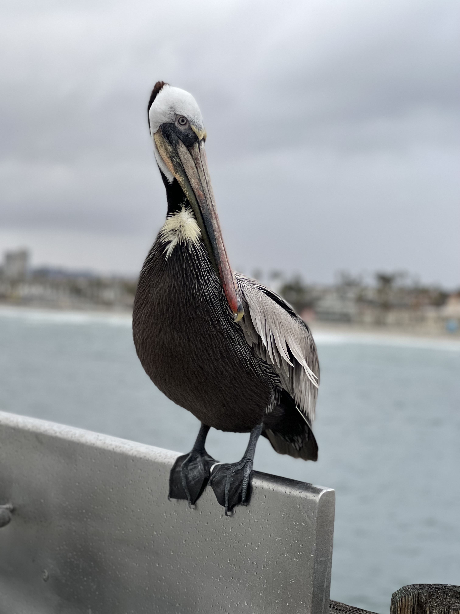
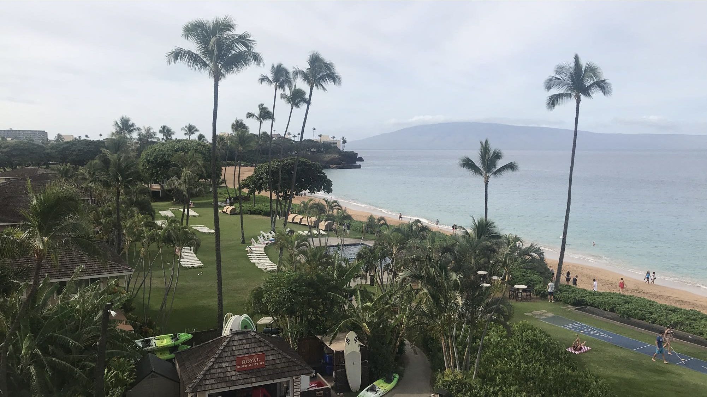
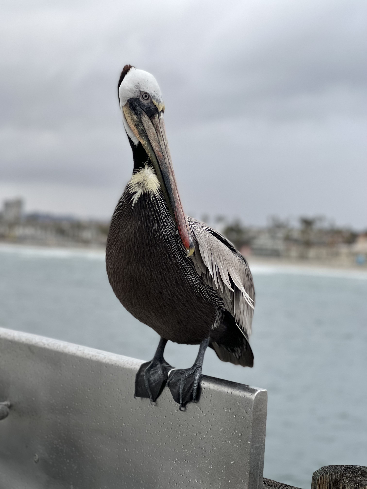
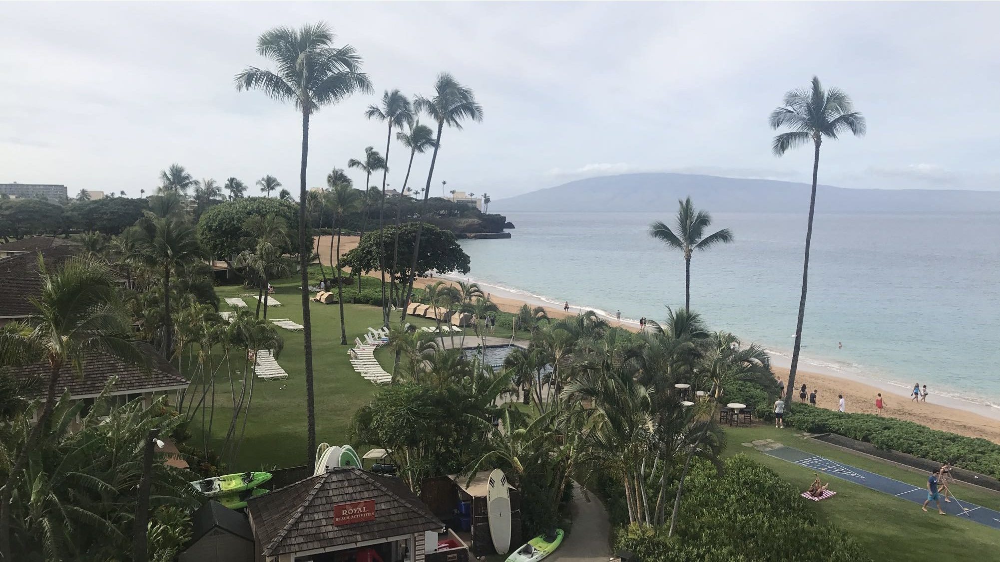

Hello! My name is Christopher, this is my portfolio I will be sharing some things about myself.
Such as my interest's, hobbies, ect.
I am 26 years old. I have a beautiful wife and a handsome son. He just started kindergarten. I am really proud him, seeing him grow has been a blessing. We recently put him on a soccer team. He is a natural! He loves playing soccer and he has also made new friends.
I love playing soccer too! I've been playing soccer since I was 7, I became really good I ended up playing for many comp team's traveled to different states to play in tournaments. I was captain for the team, we have won many tournaments. Below are some of the teams I played for.
| Team | Position | Jersey # |
|---|---|---|
| Valencia FC | Left Wing Defender Captain | 5 |
| La Roca | Center Midfielder | 9 | Rampage FC | Attacking Midfielder | 7 |
If you are interested in playing soccer these are some really good websites I use to buy soccer gear they have everything you need!
soccer.com soccerpro.comI also love the outdoors like going camping, riding on Atv's, moutaining biking, hiking, long boarding, traveling, trying new things, and spending time with friends and family.
I recently started college I've always enjoyed playing on computer's and working on them also learning how programs are created I find it very interesting. So I decided to pursue a career in CyberSecurity. So far its been good I'm learning a lot I hope one day I can work in IT for a big company.
Here are some pictures I took when we went on some of our trips.
 

Thank you for viewing!